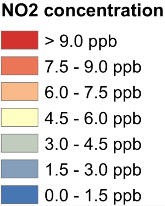
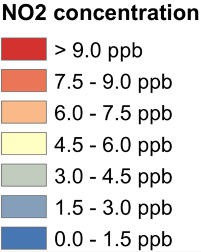

BC
NO2
Black carbon (BC) is easily identifiable as black or grey "soot" emitted from a diesel truck, industrial facility, or camp fire. BC is a component of fine particulate matter (PM2.5); breathing fine particles increases risks of asthma attacks, heart attacks, reduced lung function, lung cancer, and death. Allegheny County does not meet federal standards for PM2.5 concentrations, and BC is part of the problem. In Pittsburgh, the major sources of BC are industrial facilities and diesel vehicles. The highest BC (and PM2.5) concentrations are found in communities in the river valleys, and people living in those communities have higher risks of negative health impacts than both the county and national average.
Nitrogen dioxide (NO2) is part of a larger class of compounds called nitrogen oxides (NOx) that are emitted by cars, trucks, buses, trains, power plants, industrial facilities, and outdoor power equipment. NO2 is one of the EPA's criteria pollutants that have strict ambient concentration standards. Exposure to NO2, even for as little as 30 minutes, increases airway inflammation in healthy people and can worsen asthma symptoms. In Pittsburgh, the highest NO2 concentrations are found downtown, along major roadways, and near industrial areas. People living or working in these areas have higher risk of airway inflammation and asthma attacks.
 
